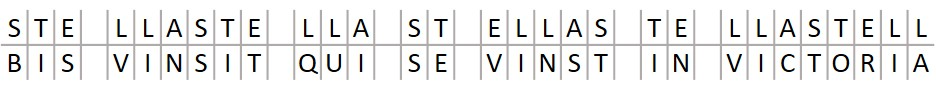
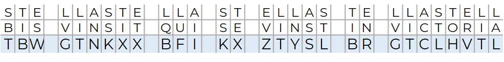

3/10
Учитывая, что все шифры сводятся к перестановкам или заменам Блез де Виженер немного усложнил уже существующий одноалфавитный шифр. Вместо того чтобы для зашифровки сообщений использовать всего один алфавит, Виженер решил использовать сразу 26.
Для начала мы строим квадрат Виженера, который представляет собой все сдвиги исходного алфавита, начиная от нулевого сдвига, заканчивая двадцать пятым.
Идея заключается в том, чтобы можно было шифровать каждый отдельный символ любым из этих алфавитов. То есть, первая буква может быть зашифрована третьим алфавитом, вторая четвертым, третья первым и так далее.
BIS VINCIT QUI SE VINCIT IN VICTORIA
Вся последовательность алфавитов будет являться нашим ключом, который нужно запомнить. Для этого придумывают ключевое слово и записываем его друг за другом над каждой буквой нашего текста.

Каждая буква в нашем ключе является началом одного из двадцати шести алфавитов, в котором исходная буква снизу будет зашифрована. Для ускорения процесса пользуются получившимся квадратом.
Сверху записываем все буквы алфавита, которые будут обозначать буквы из нашего сообщения, слева буквы, которые будут обозначать буквы ключа их пересечение – это и есть символ, который мы заменяем буквы исходного сообщения.

Аналогичным методом происходит расшифровка сообщения.
Поскольку для шифрования используются одновременно много алфавитов, вместо одного, то такой шифр называется многоалфавитным шифром замены. Блез де Виженер смог выполнить главную задачу – обезоружить частотный анализ, потому что теперь каждой одинаковой букве в зашифрованном тексте могут соответствовать сразу много различных букв, в зависимости от задаваемого ключа. Так как букв может быть огромное количество, это исключает любые попытки их перебора.
Использование шифра Виженера требует много усилий, а соответственно, и большого количества времени.